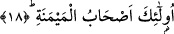

infaktır. Yoksa kişinin riya ve övünmek için harcadığı çok mal değildir. Böyle bir
harcama tıpkı şu âyette anlatılan harcama gibidir: “Onların bu dünya hayatında
yapmakta oldukları harcamaların durumu, kendilerine zulmetmiş olan bir kavmin
ekinlerini vurup da mahveden kavurucu bir rüzgarın durumu gibidir” (Âl-i İmran,
3/117).
“Akabe/sarp yokuş” kelimesinin zikredilmesinde âhiretin sarp yokuşunu ancak günah
yükü hafif olanların geçebileceğine işâretler vardır.
Muhâsibî der ki: Bu öyle bir sarp yokuştur ki onu ancak karnını haram ve şüpheli
şeylerden uzak tutan ve sâdece ölmeyecek kadar yiyip içen kimse geçebilir.
Kâsım ise şöyle der: Sarp yokuş, senin nefsindir. Allah’ın “boynu çözmek/âzâd
etmek” buyurduğunu görmez misin? Çünkü ‘boynu çözmek’ demek senin nefsini halkın
köleliğinden kurtarman ve rabbına kullukla meşgul etmen, demektir.
“Birbirine sabrı tavsiye edenlerden” olmaktır. Yani birbirlerine Allah’a itâatte,
günah işlememekte ve musîbetlerde sabrı tavsiye edenlerden olmaktır.
“Ve birbirlerine acımayı öğütleyenlerden olmaktır.” “Merhamet” kelimesi “rahmet”
mânâsınadır. Yani birbirlerine Allah’ın kullarına merhameti veya Allah’ın rahmetini
gerektirecek hayırları tavsiye edenlerden olmaktır. Bu durumda ifâdenin başında muzaf
hazfedilmiş veya sebep olmaktaki kemâline dikkat çekmek üzere müsebbeb zikredilip
sebeb kasdedilmiş demek olur. Rahmet bu mânâsı ile birinci mânâdan daha geneldir.
Birinci mânâda rahmet; yetim, fakir ve benzeri; rahmete lâyık kullara şefkat
göstermektir. Bir hadîste şöyle buyurulur: “İnsanlara merhamet etmeyene Allah
merhamet etmez.”[111]
“Birbirine sabrı tavsiye edenler” ifâdesi Allah’ın emrine tâzime işârettir. “Ve
birbirlerine acımayı öğütleyenler” ifâdesi ise Allah’ın yarattıklarına şefkate ve
kemâlden sonra tekmîle; yâni başkalarını kemâle erdirmeye işârettir. Çünkü îman, kezâ
sabır, merhabemet ve diğer sâlih amellerin bizzat kendisi kemaldir. Bunları başkalarına
tavsiye etmek ise başkalarını kemâle erdirmek bâbındandır.
Bazı âlimler der ki: Özellikle ihtiyaç ve sıkıntı zamanında başkalarını yedirip
doyurmak iffet çeşitlerinin en üstünüdür. İman ise hikmet çeşitlerinin en yücesidir. Bu
îman ilmî ve yakînî olan îmandır. Âyette “îman” “sonra” lafzının ardından getirilmiştir.
Bunun sebebi îmanın ilk fazilet olan fakiri yedirip doyurmadan yükseklik ve yücelik
itibariyle ne kadar yüksek olduğuna işâret etmek ve îmanın esas olduğunu vurgulamak
içindir. Zorluklara/sıkıntılara sabretmek ise cesaret çeşitlerinin içinde en büyüğüdür.
Allah’ın bu âyette sabrı îmandan sonra getirmesi, şecaat/cesaret faziletinin yakînî îman
olmadıkça elde edilemeyeceğine, karşılıklı şefkat ve sevginin ise adâlet çeşitleri içinde
en üstün olduğuna işâret etmek içindir.